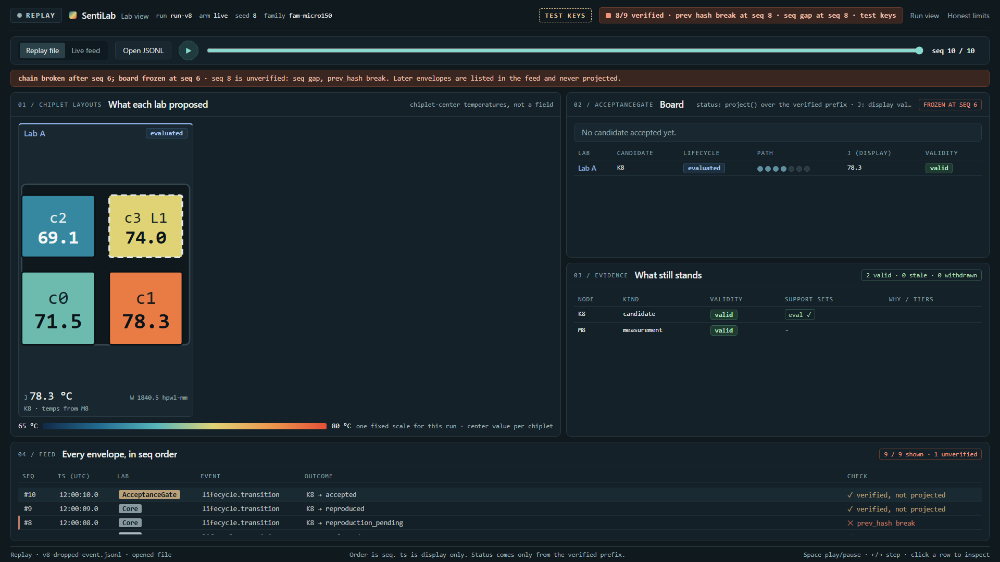
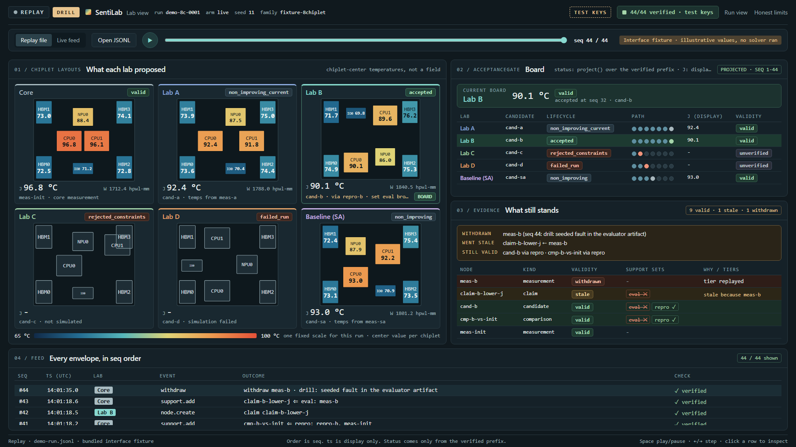
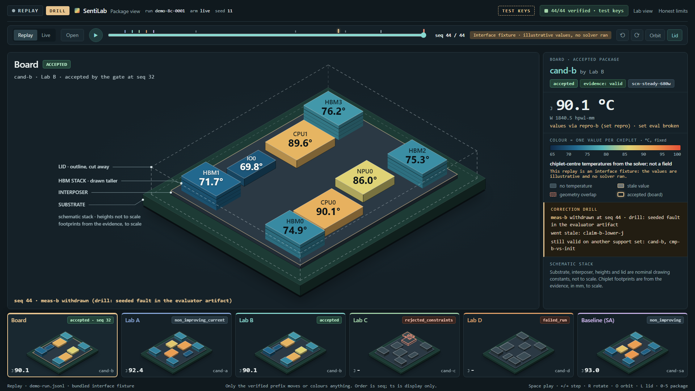

AI agents produce engineering findings faster than anyone can check them.
- LostFindings scatter across chats, logs and branches.
- UncheckedNobody can see what actually ran, or on which inputs.
- UncorrectableWhen an input proves wrong, nothing shows what else it broke.
A lab where every result is signed, reproduced and correctable later.
A deterministic gate decides. A signed log remembers.
- Labs propose
Several labs and a baseline submit candidate layouts.
- The gate accepts
Only reproduced, verified results. No model decides.
- The log records
Append-only. Each event hashed, chained and signed.
- The Lab view shows
Only the verified prefix. It freezes when evidence breaks.
Chips: each part's tracker ticket and its status.

Withdraw a measurement. See what falls and what stands.
- CandidateA lab proposes a layout.
- ReproductionRe-run in a fresh process.
- AcceptanceThe gate accepts it.
- WithdrawalA measurement is withdrawn in a seeded-fault drill.
- PropagationIts dependents go stale. Independently supported results stand.


Package view · · open PRBoth views replay a test-key interface fixture: illustrative values, no solver ran.
What we measured, scoped exactly.
- training steps
- adapter saved
- reloaded in a fresh container
- HTTP responses
- teardown
Exact JSON on both evaluation paths, on source cases already seen in training, with label metadata supplied in the prompts.
Plumbing, not generalization.
independent artifact checks passed.
including a conservative prior reservation, within the cap.
No rerun result is claimed.
Max gap to : at , at .
At a fixed tolerance: and ranking inversions.
A fixed-sample result, not a universal error bound.
Deliverables
Progress
Next
Scientific benefit Full completion Public runtime
The evidence rules
The core is the only writer. Each event becomes a canonical envelope: hashed, chained to the previous hash, and signed.
The view projects only the prefix that verifies. At the first gap, bad hash or conflict it stops; later envelopes are listed, never projected.
LIVE needs verified progress, not just arrivals. A stall, a failed poll or a broken chain turns the label STALE and holds the board.
Withdrawing a measurement makes everything that depends on it stale. A result with another valid support set stays valid.
Known limitA server can hold back its newest envelopes while it keeps releasing older ones, and the view cannot tell. Only a later full replay shows the truth. Order is by sequence; timestamps are display only.
tickets, deliverables
open measured verified complete optional, deferred (dashed)